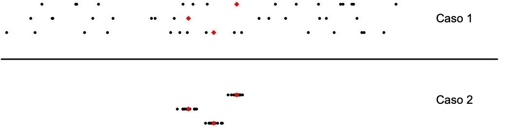

Capítulo 12 ANOVA
12.1 Nada es gratis (y los errores se acumulan)
¿Por qué se elige casi siempre el 95% como el nivel de confianza de los intervalos de confianza? En parte es desconocimiento o vaguería: todo el mundo lo hace así porque todo el mundo lo hace así. Pero “todo el mundo lo hace así” porque es un buen punto de equilibrio.
Imaginemos que buscamos la media de anchura del pulgar, por ejemplo para diseñar un pulsador. Tomamos medidas y calculamos que la anchura media, con un nivel de confianza del 60%, es de 3,21 cm a 3,36 cm. Tenemos poca incertidumbre en la medida —poco mas de ± 2,2%— pero nuestra seguridad en estos valores es baja: es muy probable que el valor real sea inferior o superior. Es un intervalo poco útil. Si subimos el nivel de confianza al 99,9% tenemos un intervalo de 2,93 cm a 3.65 cm. Ahora tenemos mucha seguridad, pero la incertidumbre ha crecido mucho —es más que ± 10%— y sigue siendo poco útil para diseñar el pulsador. Y esto es muy típico en ingeniería: lo que ganamos por un lado lo perdemos por otro. La experiencia ha mostrado que un nivel de confianza de alrededor del 95% (3,10 cm a 3,47 cm en nuestro ejemplo) nos da un buen equilibrio entre incertidumbre y precisión.
¿Y qué pasa si para saber una sola cosa de una sola población necesito realizar 10 o 15 intervalos de confianza? Podemos pensar que cada intervalo de confianza es una moneda. Sale “cara” si la media poblacional está en el intervalo y cruz si no. Un nivel de confianza del 95% significa que sale cara el 95% de las veces. Si para nuestra prueba necesitamos 15 intervalos de confianza y el nivel de confianza es del 95%, entonces necesitamos calcular la probabilidad de obtener 15 caras seguidas. Esta probabilidad es \(0.95^{15} = 0.463\). Vemos que habremos “acertado” en las 15 medias menos del 50% de las veces. Podemos intentar arreglar esto aumentando el nivel de confianza de manera que la probabilidad de que las 15 medias poblacionales estén en los intervalos sea del 95%. Es decir, queremos una moneda tal que la probabilidad de tener 15 caras seguidas es del 95%. Esto exige que el nivel de confianza de cada intervalo sea del 99.7% (\(\sqrt[15]{0.95} = 0.997\)). Luego para conseguir una seguridad adecuada del conjunto hemos de perder fuertemente en la precisión de cada intervalo.
Con los p-valores tenemos un problema similar. Hay dos posibles errores que podemos cometer: mantenernos en la hipótesis nula cuando hubiéramos tenido que cambiarnos a la alternativa o habernos cambiado a la alternativa cuando hubiéramos tenido que permanecer en la nula. Estos errores tienen los muy desafortunados nombres de error de tipo II y error de tipo I respectivamente (nunca me acuerdo cuál es cuál). Intentar reducir la probabilidad de un tipo de error lo único que hace es aumentar la del otro. Y si tenemos que hacer muchos contrastes para una única población tenemos el mismo problema, o aún peor, que con los intervalos de confianza.
Uno podría pensar que realizar 15 contrastes de hipótesis con sus 15 intervalos de confianza para una única población no pasa casi nunca. Lo contrario, no es nada inusual. Imaginemos que estamos realizando un estudio sobre nutrición y tenemos 6 dietas (mediterránea, vegetariana, hiper proteica, etc.) y queremos saber su influencia en el nivel de colesterol. Tendríamos que comparar el nivel de colesterol par a par (mediterránea contra vegetariana, mediterránea contra hiper proteica, etc). Tenemos 15 pares, luego hay que realizar 15 contrastes de hipótesis.
Para resolver este problema los estadísticos han creado métodos que permiten realizar la comparación conjunta de todos los pares en una única prueba. Cuando lo que tenemos es una variable numérica y una cualitativa, en vez de hacer 15 t-test, realizamos una única prueba llamada ANOVA; cuando tenemos dos variables cualitativas, en vez de realizar 15 prop-test, realizamos una única prueba llamada \(\chi^{2}\) (Ji-cuadrado). En este documento estudiaremos el ANOVA y dejamos el \(\chi^{2}\) para después.
12.2 Punto de partida
Sigamos con el ejemplo del nivel de colesterol y las dietas. Tenemos 120 individuos, 20 para cada una de las 6 dietas (variable cualitativa) y el nivel de colesterol de cada individuo (variable cuantitativa). Queremos saber si la dieta influye en el nivel de colesterol. La primera pregunta que nos hacemos es “¿Es el nivel de colesterol el mismo en todas las dietas?”. Si es el mismo, entonces no parece que las dietas en estudio influyan en el nivel de colesterol. Si no es el mismo, nos hace pensar que sí que influyen y que hay unas dietas mejores que otras en este aspecto.
Queremos hacer esta comparación de una vez, no entre cada par de dietas. Veamos el razonamiento básico que permite hacerlo.
En la figura siguiente tenemos dos conjuntos de datos, llamados Caso 1 y Caso 2. Tenemos 3 grupos diferentes en cada caso. Los puntos negros son los datos individuales, mientras que los diamantes rojos son las medias de cada grupo.

Mirando sólo los datos del Caso 1, sin hacer cuentas, llegamos a la conclusión que los tres grupos de datos representados son muy similares y no vemos diferencias entre ellos. Mientras que si miramos a los del Caso 2, claramente vemos que sí que son diferentes. Lo interesante es que las medias de los 3 grupos del Caso 1 son iguales a las medias de los 3 grupos del Caso 2. ¿Entonces, por qué en un caso los consideramos diferentes y en el otro no?
La diferencia en la conclusión viene del hecho que la dispersión (varianza o desviación típica) dentro de cada grupo del Caso 1 es claramente mayor a la dispersión de las medias de los grupos, mientras que la dispersión de los datos de cada grupo del Caso 2 es claramente inferior a la dispersión de las medias de los grupos. Esta es la clave que vamos a explotar.
Lo que vamos a hacer es crear un estadístico que es la razón entre la varianza dentro de cada grupo y la varianza entre los grupos. A este estadístico lo vamos a llamar \(F\). La expresión matemática resultante es:
\[ \mathrm{SS\; dentro} = \sum^{p}_{j = 1}\sum^{n_{j}}_{i = 1}(X_{ij} - \bar{X}_{.j})^{2}\] \[\mathrm{SS\; entre} = \sum_{j}n_{j}(\bar{X}_{.j} - \bar{X})^{2}\] \[F = \frac{\frac{\mathrm{SS\; entre}}{p-1}}{\frac{\mathrm{SS \; dentro}}{n-p}}\]
La sigla SS significa “sum of squares” (suma de cuadrados). El número de niveles es \(p\), el número de individuos en cada nivel es \(n_{j}\) y \(n\) es el número total de individuos. La media total es \(\bar{X}\) y la media en cada nivel es \(\bar{X}_{.j}\)}
No es difícil ver que si todas las medias son iguales, el numerador de \(F\) es 0, y por lo tanto \(F = 0\) y si las medias no son iguales, entonces \(F > 0\). Lo bueno es que si los datos dentro de cada nivel siguen una distribución normal, entonces se sabe calcular la probabilidad de que \(F\) tome un valor concreto al coger una muestra. Esto nos permite hacer un constraste de hipótesis y calcular un p-valor.
La hipótesis nula es H0: \(F = 0.\) Este valor \(F = 0\) ocurre si todas las medias son iguales. La hipótesis alternativa es Ha: \(F > 0\), que ocurre si no todas las medias son iguales. Usando las fórmulas matemáticas mostradas, calculamos \(\hat{F}\), y entonces el p-valor es Prob[\(X > \hat{F}\; |\; F = 0\)].
Este método se llama Análisis de la Varianza (Analysis of Variance) y se conoce por su sigla ANOVA.
Como puede verse, calcular un ANOVA es tedioso, con muchas sumas de cuadrados y ya nadie lo hace a mano, sino que utiliza las funciones incorporadas en los paquetes estadísticos.
R tiene 3 funciones que permite el cálculo del ANOVA, aunque aquí sólo hablaremos de 2. No dan exactamente los mismos resultados, pues realizan funciones un poco diferentes a las vistas aquí (y diferentes entre sí). Además, presentan diferentes funcionalidades. Más adelante hay un tutorial de ANOVA con los detalles del uso, aquí sólo explicaré la estructura básica y las diferencias.
Como se deduce del ejemplo, un ANOVA se usa cuando tengo dos variables, una cuantitativa (Q) y otra cualitativa (N). Estas funciones de R trabajan sobre un dataframe en las que hay estas dos variables, y puede haber más. La notación es la misma que la que usábamos para hacer un diagrama de cajas o un stripchart: Q~N.
La primera función que tiene R para calcular ANOVA se llama aov(). Esta función exige desviaciones típicas iguales de la variable cuantitativa para cada nivel de la cualitativa. Su ventaja principal es que provee
información para poder calcular intervalos de confianza de todas las
diferencias. Para calcular estos intervalos de confianza se debe
utilizar la función TukeyHSD(). Esta función calcula todos
los intervalos “de golpe” y no tiene el problema indicado en la
primera sección.
La segunda función se llama oneway.test(). Es menos restrictiva que aov() pues permite que las desviaciones típicas no sean iguales. Tiene el parámetro var.equal que permite indicar si las varianzas (y por lo tanto las desviaciones típicas) son iguales o no. En caso de duda, es conveniente decir que no lo son.
Dadas estas diferencias, vemos que si sabemos que las varianzas en
cada nivel son iguales, podemos usar aov(), lo que nos
permitirá calcular los intervalos de confianza con TukeyHSD(). Si no estamos seguros que sean iguales, o sabemos seguro que no son iguales, debemos usar
oneway.test() y no podremos calcular los intervalos de confianza con TukeyHSD().
Ambas funciones nos dan un p-valor que se interpreta de la forma habitual. Recordemos que H0 es (informalmente) que las medias son todas iguales y que Ha es (informalmente) que no son todas iguales. El p-valor se calcula suponiendo que se cumple H0 y nos da una indicación de lo “normal” que es la muestra. Digamos que el p-valor nos sale 0,28. Esto quiere decir que, suponiendo que todas las medias son iguales, esta muestra es normal, es decir, que lo que vemos es consistente con el hecho de que todas las medias sean iguales. No tenemos, por tanto, ningún motivo para abandonar H0. Seguimos suponiendo que todas las medias son iguales.
En cambio si nos sale un p-valor de 0,00063, entonces una de dos, o las medias son todas iguales y tenemos una muestra que es extraordinariamente poco probable o no se cumple H0 y nos pasamos a Ha. En este caso, lo razonable es pasarse a Ha.
Si el p-valor fuera 0.11, entonces esta prueba del ANOVA nos da poca información y no nos permite decantarnos ni por uno ni or otro.
El ANOVA solo nos da información sobre la pregunta “¿son todas las medias iguales?”. Si lo son, pues ya está. Pero si no lo son querremos saber qué dieta o diaeas on mejor qeu las otras. Querremos saber si es que hay una que es distinta a las demás; si todas son distintas entre sí; si hay 3 iguales por aquí, dos iguales por allá y una que va por libre o qué. Este análisis no es difícil, pero si que puede ser largo, con diferentes pasos. En el tutorial se muestra como realizarlo.
12.3 Tutorial de ANOVA en R
El Análisis de varianza, conocido como ANOVA (ANalysis Of VAriance) es una prueba estadística que nos permite analizar el caso de datos con dos variables, una cuantitativa y otra cualitativa. En particular nos ayuda a determinar si las medias de la variable cuantitativa para cada uno de los factores de la cualitativa son iguales o no.
Detalles de por qué se usan los ANOVA, de los cálculos involucrados y del contraste de hipótesis que se realiza están en el documento asociado, titulado ANOVA. En este tutorial nos centraremos en las funciones que tiene R para calcular los ANOVA, cómo se usan y un ejemplo de análisis.
No es demasiado simple ni intuitiva la manera en la que se hace este análisis en R. Es más, hay 3 maneras de hacerlo. Dependiendo de los datos, podemos usar una función o hemos de usar otra. Y unas funciones nos dan una información que otras no lo hacen. Veamos el funcionamiento de las 3 funciones y esto nos ayudará a elegir cuál necesitamos en cada caso
12.3.1 El problema
El conjunto de datos babies del paquete UsingR contiene datos de salud de 1236 nacimientos. Para este tutorial sólo nos van a interesar 2 variables: el peso del bebé al nacer (la variable cuantitativa) y el hecho de si la madre fumaba o no (la variable cualitativa). La columnawt nos da el peso en onzas del bebé al nacer y la columna smoke nos indica si la madre fuma o no. Tiene 5 niveles: 0 (nunca), 1 (fuma en la actualidad), 2 (fumó hasta el inicio del embarazo), 3 (fumó en el pasado, hace tiempo que no fuma) y 9 (No sabe/No contesta, NS/NC).
Podemos usar el dataframe babies directamente, pero para más comodidad vamos a crear un dataframe nuevo con sólo las dos columnas que nos interesan. Para ello usamos la función subset() que nos permite extraer un subconjunto del dataframe. De paso vamos a quitar el nivel 9 (NS/NC) que no añade información y puede añadir ruido:
## wt smoke
## 1 120 0
## 2 113 0
## 3 128 1
## 4 123 3
## 5 108 1
## 6 136 2Hemos hecho un attach() (conectar) para no tener que escribir el nombre de la variable cada vez.

Vemos que no hay unas enormes diferencias, aunque parece que el factor 1 (la madre ha fumado durante el embarazo) puede que tenga un peso un poco inferior. Hagamos el ANOVA para comprobarlo.
12.3.2 El primer método: oneway.test()
En cualquiera de los tres métodos, R quiere que los datos estén en un dataframe con pares (valor, factor). Por suerte, en nuestro dataframe bebes ya están así y no hemos de hacer ninguna transformación.
La función mas simple para calcular un ANOVA es oneway.test(). Su estructura de llamada es la siguiente:
##
## One-way analysis of means (not assuming equal variances)
##
## data: wt and factor(smoke)
## F = 24.505, num df = 3.00, denom df = 266.31, p-value = 4.925e-14Hemos usado factor(smoke) y no directamente smoke porque los niveles son números (0, 1, 2 y 3) y queremos asegurarnos que R lo considera una variable cualitativa y no una numérica. También, como no sabemos si las varianzas (o desviaciones típicas) son iguales en todos los casos hemos indicado que pueden ser diferentes con el parámetro var.equal.
Una manera de hacerlo es realizar otro ANOVA, pero sin el caso del que sospechamos. Creamos una nueva variable bebessinfum:
Realizamos otro ANOVA:
##
## One-way analysis of means (not assuming equal variances)
##
## data: wt and factor(smoke)
## F = 0.35239, num df = 2.00, denom df = 167.91, p-value = 0.7035<Hemos usado en esta ocasión el parámetro data para indicar el nombre de la variable y no tener que escribirla en cada columna. Vemos que el p-valor es ahora de 0.7035 y por lo tanto hay una alta probabilidad de, si hacemos otro muestreo, obtener datos con medias así de diferentes o aún más diferentes. Los datos son consistentes con la hipótesis nula (las medias son iguales). Parece ser que el caso 1 es el único que tiene media diferente. ¿Pero cuánto?
12.3.3 El segundo método: aov()
Si queremos saber más que simplemente el p-valor, si queremos saber si hay diferencia entre las medias y lo grande que puede ser, necesitamos una función que realiza cálculos más complejos que oneway.test(). Esta función es aov().
Esta función exige que varianzas iguales de la variable cuantitativa (el peso en nuestro caso) para cada nivel de la cualitativa (si fuman o no). Simplemente de la gráfica vemos que no parece que haya muchas diferencias. Vamos a comprobarlo.
## [1] 17.10966## [1] 18.09895## [1] 17.8037## [1] 18.60828Están todos entre 17.1 y 18.6. Consideramos que la diferencia no es muy grande y decidimos que sí podemos utilizar aov().
La información que nos interesa la podemos obtener con los intervalos de confianza. Una primera idea es calcular todos los intervalos par a par: 0-1, 0-2, 0-3, 1-2, 1-3, 2-3. Ya explicamos en el documento por qué esto es una mala idea: si para un par de variables tenemos una probabilidad de 0.95 que la media poblacional esté dentro del intervalo, para los 6 pares, la probabilidad de que todas las medias estén dentro de los intervalos es de 0.746 (¿Cómo se calcula?).
R tiene una función para calcular los intervalos de confianza de todos los pares de variables de un ANOVA. Esta función se llama TukeyHSD(). Primero hay que hacer el ANOVA con aov() y después pasar a esta función el resultado para que calcule los intervalos de confianza. Hemos de usar obligatoriamente aov() y no puede hacerse el ANOVA con oneway.test(), ya que esta función no calcula todo lo que necesita TukeyHSD().
## Df Sum Sq Mean Sq F value Pr(>F)
## factor(smoke) 3 23638 7879 25.19 8.2e-16 ***
## Residuals 1222 382290 313
## ---
## Signif. codes: 0 '***' 0.001 '**' 0.01 '*' 0.05 '.' 0.1 ' ' 1## Tukey multiple comparisons of means
## 95% family-wise confidence level
##
## Fit: aov(formula = wt ~ factor(smoke), data = bebes)
##
## $`factor(smoke)`
## diff lwr upr p adj
## 1-0 -8.668069 -11.511237 -5.824902 0.0000000
## 2-0 0.306637 -4.752975 5.366249 0.9986503
## 3-0 1.659320 -3.230154 6.548793 0.8188239
## 2-1 8.974706 3.868683 14.080730 0.0000398
## 3-1 10.327389 5.389904 15.264874 0.0000005
## 3-2 1.352683 -5.119938 7.825304 0.9498367Noten que en la función no hemos puesto el parámetro var.equal = F ya que el método de cálculo de esta función exige que las varianzas sean iguales. Nótese también que el valor calculado del estádístico F no es idéntico (aunque es bastante parecido).
En la salida de TukeyHSD() hemos de notar que dice que el nivel de confianza es del 95% family wise, es decir en conjunto y no para cada intervalo. Esto es, hay una probabilidad de 0.95 que todas las medias estén en los intervalos calculados.
Tenemos para cada par de niveles el valor de la diferencia de las medias (diff), los extremos inferior y superior del intervalo de confianza (lwr y upr) y el p-valor resultante del contraste de hipótesis con la hipótesis nula “H0: la diferencia de medias de este par es 0”. Notamos que en el par 1-0 la diferencia es de -8.7 onzas y el intervalo y el p-valor son inconsistentes con la idea de que las medias sean iguales. En el 2-1 la diferencia es de 9.0 onzas y tenemos la misma inconsistencia. Finalmente en el par 3-1 la diferencia es de 10.3 onzas y otra vez es inconsistente con la idea de que las medias sean iguales. En los otros casos las diferencias son de menos de 2 onzas y los p-valores son muy altos por lo que no podemos rechazar que las medias sean diferentes. Si hay una diferencia entre las medias, es demasiado pequeña para poder asegurar con estos datos que las medias sean distintas.
Los números nos dan una información detallada, pero es más fácil obtener una idea global con un gráfico. Por suertes es muy fácil dibujar estos intervalos de confianza:

La raya vertical nos indica dónde está el 0 y vemos que los intervalos de confianza de diferencias con el nivel 1 no pasa por el 0 mientras que todos los demás sí lo hacen. Esto nos muestra gráficamente lo que ya habíamos observado numéricamente.
12.3.4 El tercer método
Hemos visto que las dos funciones estudiadas, oneway.test() y aov() no hacen exactamente lo mismo. Si queremos especificar que las varianzas pueden no ser iguales debemos usar oneway.test() pero si queremos usar TukeyHSD() para calcular los intervalos de confianza, hemos de usar la función aov() y sólo lo podemos hacer si las varianzas son suficientemente parecidas. El tercer método es usar la combinación de las funciones lm() y anova():
## Analysis of Variance Table
##
## Response: wt
## Df Sum Sq Mean Sq F value Pr(>F)
## factor(smoke) 3 23638 7879.4 25.187 8.196e-16 ***
## Residuals 1222 382290 312.8
## ---
## Signif. codes: 0 '***' 0.001 '**' 0.01 '*' 0.05 '.' 0.1 ' ' 1(Noten que hemos hecho un detach(bebes). No vamos a usar más este dataframe por lo tanto conviene desconectarlo. Si nos olvidamos de hacer los detach() pronto nos veremos en un lío).
Los cálculos son los mismos que realiza la función aov() pero no podemos usar TukeyHSD() sobre los resultados. Este es un método que se usa si nos interesa hacer un lm() y además hacer un ANOVA. Para sólo hacer el ANOVA, no vale la pena.
12.3.5 ¿Y si los datos no están como los quiere R?
Hemos visto 3 maneras de calcular un ANOVA, y hemos visto que para los tres métodos R quiere que los datos estén como dos columnas en un data frame: en una columna están los valores cuantitativos (el peso de los bebés en nuestro ejemplo) y en la otra columna los factores (características de consumo de tabaco de la madre). Pero a veces los datos no están así.
Un caso es el conjunto de datos ewr del paquete UsingR. Este conjunto contiene los tiempos de pista antes de despegar o después de aterrizar de los vuelos en el aeropuerto de Newark (uno de los aeropuertos de Nueva York). Veamos cómo están organizados los datos:
## Year Month AA CO DL HP NW TW UA US inorout
## 1 2000 Nov 8.6 8.3 8.6 10.4 8.1 9.1 8.4 7.6 in
## 2 2000 Oct 8.5 8.0 8.4 11.2 8.2 8.5 8.5 7.8 in
## 3 2000 Sep 8.1 8.5 8.4 10.2 8.3 8.6 8.2 7.6 in
## 4 2000 Aug 8.9 9.1 9.2 14.5 9.0 10.3 9.2 8.7 in
## 5 2000 Jul 8.3 8.9 8.2 11.5 8.8 9.1 9.2 8.2 in
## 6 2000 Jun 8.8 9.0 8.8 14.9 8.4 10.8 8.9 8.3 inCada fila nos da el tiempo medio en pista para un mes y año determinados para 8 compañías aéreas. La última columna nos dice si es tiempo de pista de vuelos que han llegado (in) o han partido (out). Nos interesa hacer un ANOVA para saber si algunas compañías tienen que esperar más en pista antes de lagar a la terminal que otras. Es decir, si el tiempo de pista depende de la compañía aérea. Los datos no están en el formato que necesitamos para hacer el ANOVA. Escojamos sólo los vuelos que aterrizan y eliminamos las columnas de año y més, que no nos interesan:
## AA CO DL HP NW TW UA US
## 1 8.6 8.3 8.6 10.4 8.1 9.1 8.4 7.6
## 2 8.5 8.0 8.4 11.2 8.2 8.5 8.5 7.8
## 3 8.1 8.5 8.4 10.2 8.3 8.6 8.2 7.6
## 4 8.9 9.1 9.2 14.5 9.0 10.3 9.2 8.7
## 5 8.3 8.9 8.2 11.5 8.8 9.1 9.2 8.2
## 6 8.8 9.0 8.8 14.9 8.4 10.8 8.9 8.3Podríamos crear el dataframe “a mano” y no sería difícil: creamos un vector son los tiempos de la compañía AA (tAA = ewrin$AA), creamos otro vector con el factor (fAA = rep("AA", length(tAA))), repetimos lo mismo para las demás compañías y después concatenamos los vectores y creamos el dataframe. Pero R nos da una función que nos hace eso. Se llama stack():
Ya de paso hemos dado un nombre adecuado a las dos columnas. Si hacemos un ANOVA obtenemos:
##
## One-way analysis of means (not assuming equal variances)
##
## data: tiempo and compAer
## F = 16.471, num df = 7.000, denom df = 74.629, p-value = 6.262e-13Y vemos que tenemos un p-valor de prácticamente 0. Es decir, si las medias fueran todas iguales, tenemos una probabilidad insignificante de obtener datos así o con medias aún más distintas. Parece mucho más probable que al menos una compañía llega en menos tiempo a la terminal que las demás. Saber cuál (o cuáles) son y cuánta es la diferencia se consigue repitiendo para estos datos lo que hemos hecho para los bebés. Adelante.